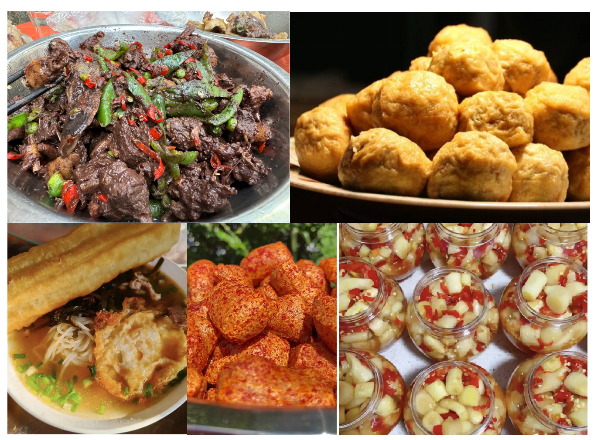

潇水竞渡 · 道州龙船
湖南 · 永州 · 道县 端午龙舟盛会 2026
国家级非物质文化遗产 —— 千年龙船赛，一城同心潮
向下滑动
湖南 · 永州 · 道县 端午龙舟盛会 2026
国家级非物质文化遗产 —— 千年龙船赛，一城同心潮
道县，古称道州，地处湖南省永州市潇水之滨，是理学鼻祖周敦颐的故里。这里的龙船习俗相传起于纪念屈原，世代相承、千年不辍，2021年「端午节（道州龙船习俗）」列入国家级非物质文化遗产代表性项目名录。
道州龙船与众不同：船头不止有龙，更有虎头、凤头、麒麟头，五彩纷呈、各护一方。每年农历五月，潇水河上百舸争流、两岸人山人海，号子声、锣鼓声、呐喊声响彻江面，被誉为「中国传统龙船文化的活化石」。

※ 赛事地点：道县潇水河城区段 · 具体场次以现场公告为准


道州龙船的船头不拘一格，分龙、虎、凤、麒麟四大类：龙头有金、黄、黑、青、白、红六色，虎头有金、黄、红、白、黑五种，凤头分金、银两类。每一种船头都是一村一姓的信仰图腾，所谓「庙生龙、龙生庙」，黑龙庙出黑龙头，黄龙庙出黄龙头，外村的龙头绝不混用。
掌龙头者，代表着一村的威望与荣誉。按道州习俗，掌头人必须由村中德高望重之人或有名望的贤达担任，赛时端坐船头执掌龙头，并为全船桨手供饭出资——掌得起龙头，方扛得起一村人心。
 理学之源
理学之源道县楼田村是北宋理学鼻祖周敦颐的诞生地。一篇《爱莲说》传诵千年，“出淤泥而不染，濯清涟而不妖”的君子之风，正源自这片山水。
 稻作之源
稻作之源玉蟾岩遗址出土了距今约1.2万年的人工栽培稻标本与早期陶器，被誉为“天下谷源、人间陶本”，是世界稻作农业的重要起源地之一。
 天下奇观
天下奇观月岩一洞三月，东望如上弦、中观如满月、西看如下弦，鬼斧神工。相传周敦颐少年时曾在此读书悟道，遂有《太极图说》之滥觞。
 红色热土
红色热土红34师师长陈树湘在湘江战役中掩护主力突围，于道县负伤被俘后断肠明志，壮烈牺牲，谱写了“为苏维埃流尽最后一滴血”的绝对忠诚。
嗦一口麻辣鲜香的螺蛳，咬一个卤得透亮入味的鸡蛋，再看一场酣畅淋漓的龙船赛——这才是道县人端午的标配。


荷叶裹肉、细绳捆扎，慢火卤透，肥而不腻、香糯绵软，是道县宴席上压桌的硬菜。

国家地理标志产品。潇水滋养的灰鹅肉质紧实鲜美，一锅清炖原汁原味，鲜掉眉毛。

红薯揉进糯米团，小火慢炸至空心，裹上红糖白芝麻——皮脆心软、香甜不腻，街头巷尾的童年味道。

形如小枕、洁白软糯，箬叶清香渗进米粑里，蒸食煎食两相宜，是道县人走亲访友的伴手礼。

粒大壳红、仁满味香，曾为朝廷贡品。看龙船时抓一把在手，嗑着瓜子喊加油，惬意得很。

赛龙船的日子里，沿河尽是小吃摊档与欢声笑语，一城烟火气，最抚凡人心。